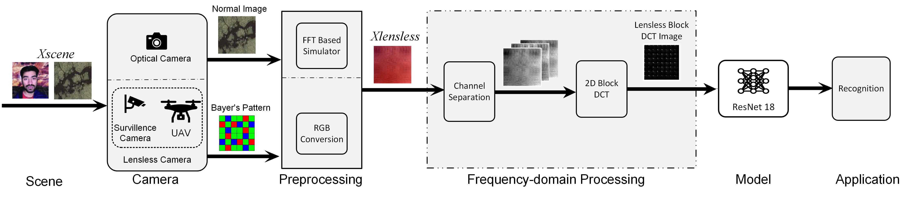

System 01 · Semantic Understanding Without Seeing
Reconstruction-Free Classification for Lensless Imaging Systems
Learning semantic information directly from lensless sensor measurements without first reconstructing a human-viewable image.
QuestionCan a model understand visual content from direct sensor measurements that humans cannot interpret?
FocusReconstruction-free classification, sensor-domain learning, and frequency-aware representation analysis.
VenuesICMLA 2025
Lensless Imaging
Sensor Measurements
Reconstruction-Free
Semantic Understanding